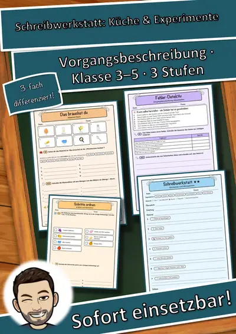

Die Polarstation – Lesespurgeschichte mit Rätselaufgaben (Klasse 3)
Begib dich mit deiner Klasse auf eine spannende Lesespur durch eine Polarstation! Nora und Lars erleben mit der Polarforscherin Frau Stern, wie Menschen mitten im ewigen Eis leben und forschen – vom Ankunftssteg über den Wohncontainer, die Küche, das Vorratslager, das Forschungslabor, den Wetterturm, den Funkraum und die Eisbohrstation bis zur Beobachtungshütte. Ganz nebenbei lernen die Kinder, wie man in extremer Kälte überlebt, warum das Eis der Pole so wichtig ist und welche Tiere dort leben. Am Ende jedes Abschnitts verrät ein Hinweis den nächsten Ort auf dem Stations-Plan – nur wer richtig liest und mitdenkt, findet den Weg und sammelt alle geheimen Buchstaben zum Lösungswort.
Die perfekte Lesespur für den WINTER: Sie verbindet motivierendes, sinnentnehmendes Lesen mit echtem Sachwissen über die Polargebiete und schult zugleich das genaue Arbeiten. Das Material ist SOFORT EINSETZBAR und in DREI DIFFERENZIERUNGSSTUFEN (leicht ★ / mittel ★★ / schwer ★★★) angelegt, sodass alle Kinder einer Klasse am selben Thema arbeiten können.WICHTIG: Das komplette Material ist sowohl in FARBE als auch in SCHWARZ-WEISS enthalten – ideal zum Sparen von Druckkosten.DAS IST ENTHALTEN
- Lesespurgeschichte in 3 Niveaus (leicht, mittel, schwer)
- farbiger Stations-Plan als Suchkarte
- Hörverstehen mit QR-Code zur MP3 (Kinder hören selbstständig mit Kopfhörern)
- vier Aufträge auf dem Weg: ein Verbinde-Rätsel, ein Polar-Quiz, eine Rechenaufgabe und ein Steckbrief
- Rätselseite (Wörter-Suchsel + Wissensfragen)
- Ausmalbild zum Thema
- ausführliches Lösungsblatt für die Lehrkraft
- alles zusätzlich als komplette Schwarz-Weiß-VarianteSO FUNKTIONIERT DIE LESESPURDie Kinder lesen ab START, entnehmen dem Text einen Hinweis auf einen Ort an der Polarstation, suchen ihn auf dem Plan und lesen bei dieser Station weiter. An jeder richtigen Station gibt es einen Sammelbuchstaben. Eingebaute Sackgassen (Fahnenmast, Abfalltonne, Werkzeugkiste, Postkiste) dienen der Selbstkontrolle und machen deutlich, dass diese zwar zur Station gehören, aber nicht zum Wohnen und Forschen. Am Ende werden die gesammelten Buchstaben umgestellt und ergeben ein geheimes Lösungswort. (Die Lösungen sind selbstverständlich nur im Lösungsblatt für die Lehrkraft enthalten.)INHALTLICHER SCHWERPUNKTLeben und Forschen im ewigen Eis: warum man dicke Spezialkleidung und beheizte Container braucht, wie sich die Menschen mit großen Vorräten versorgen, was im Forschungslabor untersucht wird, wie am Wetterturm gemessen und im Funkraum Kontakt gehalten wird, wie aus dem Eis lange Eiskerne gebohrt werden, die das Klima vergangener Zeiten verraten, und welche Tiere (Robben, Pinguine, Seevögel) in der Kälte leben. Zur Abgrenzung werden Orte behandelt, die zwar zur Station, aber nicht zum Wohnen und Forschen gehören. Das Material stellt die Zusammenhänge sachlich und kindgerecht dar.ABGEDECKTER LEHRPLAN (Klasse 3-4)
- Sachunterricht – Erde, Klima und Lebensräume: die Polargebiete, Leben in extremer Kälte, Wetter und Klima, Eis- und Klimaforschung, Tiere kalter Lebensräume, Umwelt- und Klimaschutz.
- Deutsch – Lesen mit Texten und Medien umgehen: Lesestrategien anwenden, Texten gezielt Informationen entnehmen, sinnentnehmend und selektiv lesen; Selbstkontrolle und Lesemotivation durch die Lesespur; Zuhören: einem Sachhörtext konzentriert folgen (Hörverstehen mit MP3).
- Mathematik – Rechnen im Sachzusammenhang (Zahlen rund um die Station).
- Fächerübergreifend / Kompetenzen: geografisches und naturwissenschaftliches Verständnis, Umwelt- und Klimabewusstsein, selbstständiges Arbeiten, genaues Lesen und Prüfen, Konzentration und Ausdauer, kreatives Gestalten (Ausmalbild).
Geeignet für Freiarbeit, Stationenlernen, Vertretungsstunden, Wochenplan und Homeschooling – besonders passend zur Jahreszeit WINTER. Klassenstufe 3-4 (differenziert einsetzbar auch in angrenzenden Jahrgangsstufen).
Ähnliche Materialien

Lesespaziergang Nikolausabend: Stiefel, Sterne, Plätzchenduft – 8 Stationen in 3 Lesestufen mit Hörfassung (Klasse 1–2, DaZ)

Küche – Hörverstehen mit Lückentext (interaktiv)

Küche Lückentext mit Wortspeicher Hörverstehen und Suchsel

Vizekanzler und Bundesminister der Finanzen - Lars Klingbeil

Erste Hilfe bei Kälte – Unterkühlung und Erfrierungen – Lesespurgeschichte mit Rätselaufgaben (Klasse 8)

Schreibwerkstatt Vorgangsbeschreibung – Paket Küche & Experimente: 4 Einheiten in 3 Stufen (Klasse 3–5)

Der Nachthimmel – Eine Reise zu den Sternen – Lesespurgeschichte mit Rätselaufgaben (Klasse 5)